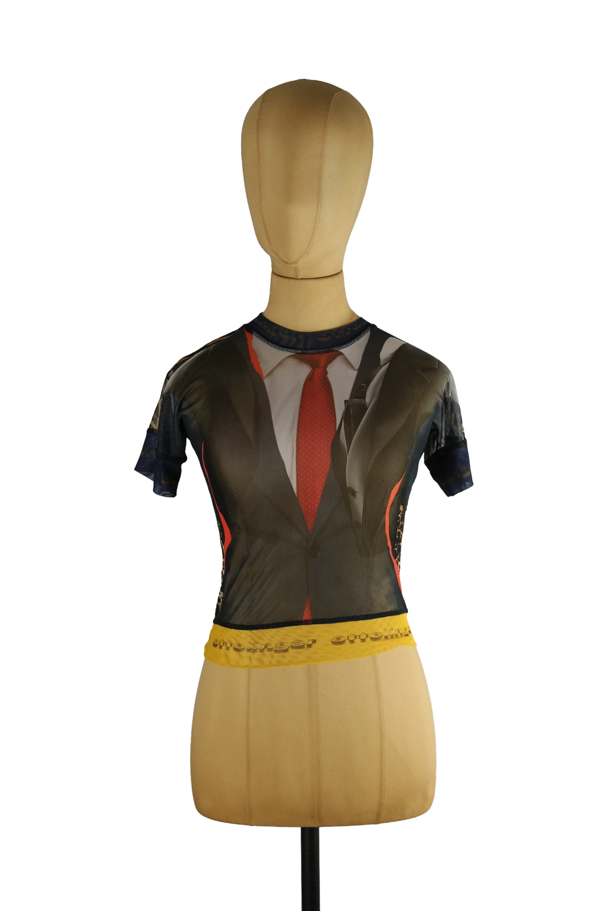

1 / 16Aus dem kuratierten Archiv von Disorder119. Figurbetontes Mesh-Top von Ottolinger mit markantem Print. Die transparente Netzstruktur bildet die Basis für ein grafisches Motiv, das Anzug, Hemd und rote Krawatte illusionistisch darstellt und mit animalischen sowie abstrakten Elementen kombiniert wird. Kontrastierende Farbflächen und seitliche Linien akzentuieren die Silhouette und unterstreichen den körpernahen Schnitt. Kurze Ärmel und ein schmal eingefasster Rundhalsausschnitt verleihen dem Piece eine präzise, sportlich anmutende Kontur. Ein typisches Ottolinger-Design zwischen Ironie, Dekonstruktion und klarer Formensprache. Details: Marke: Ottolinger Farbe: Multicolor Größe: XS Passform: Körpernah Verschluss: Ohne Material: Mesh Herstellungsland: Nicht angegeben Fotografie & Passform: Das Kleidungsstück wurde auf unserer Standard-Schneiderpuppe fotografiert, die wir zur konsistenten Darstellung aller Kleidungsstücke verwenden. Maße der Schneiderpuppe: Brustumfang 89 cm Taillenumfang 66 cm Hüftumfang 89 cm Schulterbreite 38 cm Diese Maße dienen ausschließlich der visuellen Einordnung und werden nicht als Artikelmaße bezeichnet. Zustand: Sehr guter gebrauchter Zustand ohne auffällige Mängel. Rechtliche Hinweise: Verkauf als gebrauchtes Kleidungsstück. Die Beschreibung erfolgt nach bestem Wissen und Gewissen. Farbnuancen und Oberflächenwirkungen können aufgrund von Lichtverhältnissen bei der Fotografie sowie unterschiedlicher Bildschirmdarstellungen leicht vom Original abweichen. Disorder119 steht für sorgfältig kuratierte Designerstücke mit Fokus auf Authentizität, Qualität und zeitlose Relevanz.
Shop-Kontakt noch nicht eingerichtet: WhatsApp-Nummer oder E-Mail-Adresse fehlen in SHOP_CONFIG (index.html).
Disorder119 · Kuratiertes Archiv für Designer-, Vintage- und Contemporary-Mode. Jedes Stück wird einzeln ausgewählt, fotografiert und beschrieben.